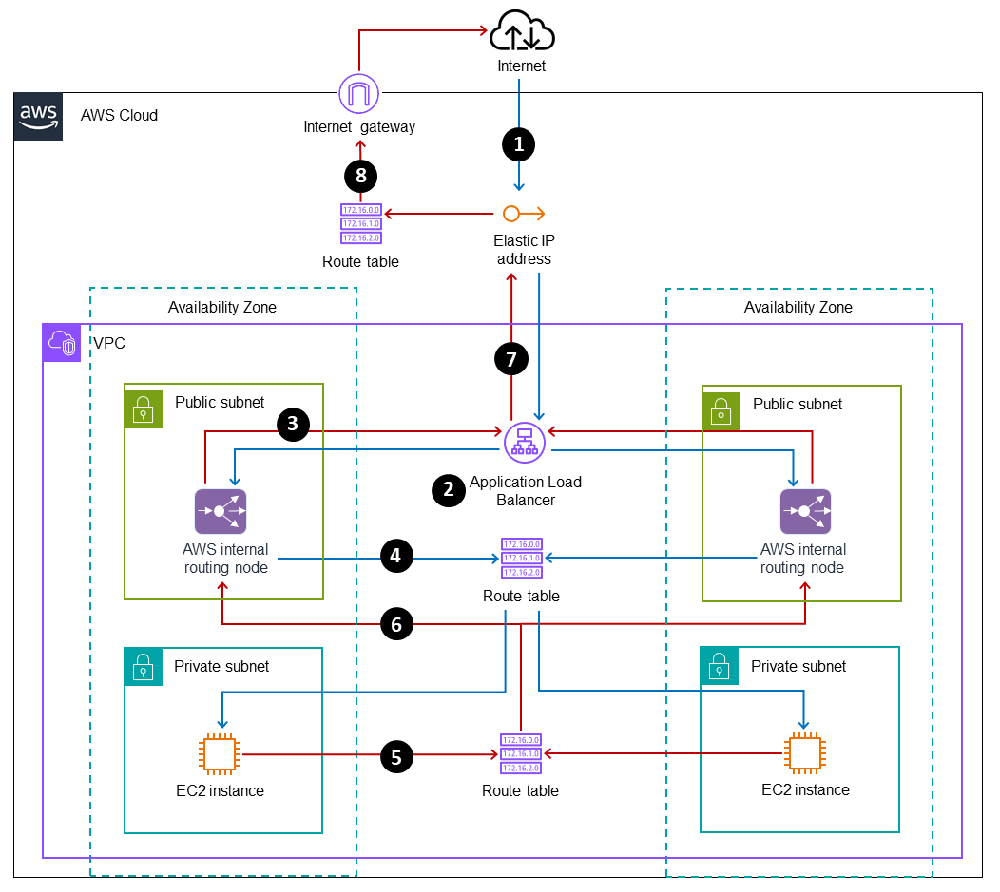

Beschreibung
AWS Elastic Load Balancing ist ein äußerst leistungsfähiger Dienst von Amazon Web Services (AWS), der
automatisch den eingehenden Anwendungsverkehr auf alle laufenden EC2-Instanzen verteilt. Dieser Dienst ist von
entscheidender Bedeutung für die Optimierung der Steuerung des Verkehrs, um Überlastungen zu vermeiden und eine
gleichmäßige Verteilung der Last auf die verfügbaren Ressourcen sicherzustellen. Der Lastenausgleich dient als
zentraler Punkt für den eingehenden Webverkehr und spielt eine entscheidende Rolle bei der Bereitstellung einer
hochverfügbaren und skalierbaren Infrastruktur für Webanwendungen.
Bei der Verwendung von AWS Elastic Load Balancing müssen neue EC2-Instanzen sich beim Lastenausgleicher
registrieren, während entfernte Instanzen sich abmelden müssen, um den Verkehr effektiv zu steuern. Dieser
automatische Vorgang gewährleistet eine kontinuierliche und dynamische Anpassung an Änderungen in der
Anwendungslandschaft, was wiederum eine optimale Leistung und Verfügbarkeit der Anwendungen sicherstellt.
Elastic Load Balancing kann sowohl für den klassischen Lastenausgleich als auch für den Anwendungs- oder
Netzwerklastenausgleich konfiguriert werden, je nach den spezifischen Anforderungen Ihrer Anwendung. Dies ermöglicht
eine flexible und anpassungsfähige Konfiguration, um den individuellen Bedürfnissen verschiedener Anwendungsfälle
gerecht zu werden.
Die automatische Verteilung des Verkehrs durch AWS Elastic Load Balancing ist von entscheidender Bedeutung,
um die Last auf die verfügbaren EC2-Instanzen gleichmäßig zu verteilen und eine optimale Leistung sowie
Verfügbarkeit sicherzustellen. Durch die dynamische Anpassung an Änderungen in der Anwendungslandschaft stellt
AWS Elastic Load Balancing sicher, dass der Verkehr effizient und zuverlässig auf die verfügbaren Ressourcen
geleitet wird. Dies trägt wesentlich dazu bei, eine hochgradig skalierbare und hochverfügbare Umgebung für
Anwendungen in der AWS-Cloud bereitzustellen und den Nutzern ein herausragendes Erlebnis zu bieten.
Die AWS Load Balancer-Services und Auto Scaling können nahtlos zusammenarbeiten, um die Skalierbarkeit
und Verfügbarkeit Ihrer Anwendungen in der AWS-Cloud zu verbessern. Hier ist, wie sie zusammenarbeiten:
Auto Scaling-Gruppen und Load Balancer:
Sie können Auto Scaling-Gruppen mit Load Balancern verknüpfen, um eine dynamische Skalierung Ihrer
Anwendung basierend auf der Auslastung zu ermöglichen. Wenn die Belastung zunimmt, startet Auto Scaling automatisch
neue
Instanzen Ihrer Anwendung, und diese werden dem Load Balancer hinzugefügt, um den eingehenden Traffic zu
verteilen.
Health Checks:
Die Load Balancer führen Gesundheitsprüfungen an den Instanzen durch, um sicherzustellen, dass nur gesunde
Instanzen Verkehr erhalten. Wenn eine Instanz als nicht gesund identifiziert wird (z. B. aufgrund eines Fehlers oder
eines Absturzes), entfernt der Load Balancer sie aus dem Pool der verfügbaren Instanzen. Auto Scaling kann
dann
eine neue Instanz starten, um die Kapazität aufrechtzuerhalten.
Integration mit Auto Scaling-Policies:
Auto Scaling verwendet Richtlinien zur Steuerung der Skalierung Ihrer Anwendung. Diese Richtlinien können auf
verschiedene Metriken basieren, wie z. B. CPU-Auslastung, Speicherauslastung oder Netzwerklast. Wenn eine Metrik
einen
vordefinierten Schwellenwert überschreitet, wird die Auto Scaling-Gruppe entsprechend der Richtlinie skaliert, indem
entweder Instanzen hinzugefügt oder entfernt werden. Die Integration mit Load Balancern stellt sicher, dass neue
Instanzen automatisch dem Load Balancer hinzugefügt werden, um den Traffic zu bewältigen.
Application Load Balancer und Network Load Balancer:
AWS bietet verschiedene Arten von Load Balancern an, darunter Application Load Balancer (ALB) und Network
Load
Balancer (NLB). Diese können je nach den Anforderungen Ihrer Anwendung verwendet werden. Zum Beispiel ist
ALB
für Anwendungen mit HTTP- und HTTPS-Traffic geeignet, während NLB für TCP-, UDP- und TLS-Traffic verwendet werden
kann.
Insgesamt ermöglicht die Integration von Auto Scaling und Load Balancer-Services von AWS eine
automatisierte und elastische Skalierung Ihrer Anwendungen, um mit variabler Nachfrage umzugehen und gleichzeitig
eine
hohe Verfügbarkeit sicherzustellen.
- Klassischer Lastenausgleich (Classic Load Balancer):
- Älterer Typ von Lastenausgleich in AWS.
- Verteilt den Datenverkehr gleichmäßig auf alle verfügbaren EC2-Instanzen in einer Region.
- Unterstützt sowohl den HTTP- als auch den TCP-Verkehr.
- Anwendungs-Lastenausgleich (Application Load Balancer - ALB):
- Aktiv auf der Anwendungsebene und ermöglicht das Routen von Datenverkehr basierend auf Inhalten.
- Bietet fortschrittliche Funktionen wie Host-basiertes Routing und Unterstützung für WebSockets.
- Geeignet für moderne Anwendungen und Mikroservices.
- Netzwerk-Lastenausgleich (Network Load Balancer - NLB):
- Agiert auf der Netzwerkebene und verteilt den Datenverkehr basierend auf IP-Adressen und Ports.
- Eignet sich besonders für TCP- und UDP-Verkehr mit extrem niedriger Latenz.
- Skaliert gut und kann Millionen von Anfragen pro Sekunde verarbeiten.
- Gateway-Lastenausgleich (Gateway Load Balancer):
- Wird verwendet, um den eingehenden und ausgehenden Datenverkehr für VPNs, Direct Connect und andere Netzwerkapplikationen zu balancieren.
- Bietet skalierbare, hochverfügbare und leistungsstarke Gateway-Services.
- TLS-Lastenausgleich (TLS/SSL Load Balancer):
- Gewährleistet die sichere Verschlüsselung und Entschlüsselung des TLS/SSL-Verkehrs.
- Unterstützt die Offloading von TLS/SSL-Protokollen, um die Belastung von Webservern zu reduzieren.
- Automatische Verteilung des Anwendungsverkehrs auf EC2-Instanzen.
- Vermeidung von Überlastung und Optimierung des Verkehrsflusses.
- Zentraler Punkt für eingehenden Webverkehr; Registrierung/Abmeldung von EC2-Instanzen.
- Lastverteilung auf verfügbare EC2-Instanzen für optimale Leistung.
- Konfiguration für klassischen, Anwendungs- oder Netzwerklastenausgleich.
- Dynamische Anpassung an Änderungen für effiziente Verkehrslenkung.
- Classic Load Balancer (ELB): Gleichmäßige Verteilung, unterstützt HTTP/TCP.
- Anwendungs-Lastenausgleich (ALB): Routen des Verkehrs auf Anwendungsebene, WebSockets.
- Netzwerk-Lastenausgleich (NLB): Verteilung basierend auf IP/Ports, für TCP/UDP.
- Gateway-Lastenausgleich: Balancierung von eingehendem/ausgehendem Datenverkehr.
- TLS-Lastenausgleich: Sichere TLS/SSL-Verschlüsselung/Entschlüsselung, Offloading zur Reduzierung der Serverlast.
Die Auswahl des geeigneten Load Balancers hängt von den spezifischen Anforderungen Ihrer Anwendung ab, einschließlich Traffic, der gewünschten Skalierbarkeit und den erforderlichen Funktionen.
- Elastic Load Balancing (ELB): Ein verteilter Lastenausgleichsdienst, der den Datenverkehr auf mehrere Zielinstanzen verteilt.
- Application Load Balancer (ALB): Ein Layer-7-Lastenausgleichsdienst, der den HTTP- und HTTPS-Verkehr auf der Anwendungsebene routet.
- Network Load Balancer (NLB): Ein Layer-4-Lastenausgleichsdienst, der den TCP-, UDP- und TLS-Verkehr auf der Netzwerkebene routet.
- Gateway Load Balancer (GWLB): Ein skalierbarer und verwalteter Lastenausgleichsdienst, der speziell für Anwendungen mit hoher Bandbreite und hoher Anzahl von Verbindungen entwickelt wurde.
- Classic Load Balancer (CLB): Ein älterer Lastenausgleichsdienst von AWS, der auf der Netzwerkebene und der Transportebene (Layer 4) arbeitet.
Schlüsselwörter
Schlüsselworte bzw. Schlagworte sollen uns dabei helfen, einen Service leichter zu erkennen, wenn es um Prüfungsfragen geht. Ließ dir die Fragen richtig durch und achte auf folgende Schlüsselworte. Sie können dir bei der Beantwortung der Fragen helfen.
- Verteilter Lastenausgleichsdienst
- Automatische Verteilung des Datenverkehrs
- Skalierbarkeit und Hochverfügbarkeit
- Unterstützung für verschiedene Protokolle (HTTP, HTTPS, TCP, UDP)
- Integration mit Auto Scaling
- TLS-Terminierung und Verschlüsselung
- Gesundheitsüberwachung von Zielinstanzen
- Lastausgleich basierend auf Anwendungsschicht (Application Load Balancer)
- Lastausgleich basierend auf Netzwerkschicht (Network Load Balancer)
- Integration mit AWS-WEB Application Firewall (WAF)
Grafische Erklärung
Prüfung Fragen
- Welche Strategien können Unternehmen implementieren, um die Leistung und Skalierbarkeit von AWS Elastic Load Balancing zu optimieren, insbesondere für hochverfügbare Anwendungen?
- Wie unterstützt AWS Elastic Load Balancing Unternehmen bei der Bereitstellung von Anwendungen in mehreren AWS-Regionen für globale Benutzer?
- Welche Vorteile bietet die Verwendung von AWS Network Load Balancer (NLB) im Vergleich zu den anderen Load Balancer-Typen?